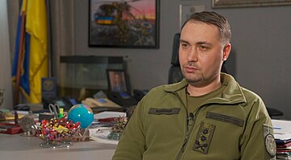

Буданов Кирило Олексійович
Буданов Кирило Олексійович родився 4 січня 1986 року у Києві(Україна). Ви його можете знати як:український воєначальник, начальник Головного управління розвідки Міністерства оборони України
Російське вторгнення в Україну (також російська агресія проти України, російсько-українська війна, в російській пропаганді — «спеціальна воєнна операція») — відкритий воєнний напад Росії на Україну, що почався в четвер о 3:40 24 лютого 2022 року. Третій етап російсько- української війни, розв'язаної Росією 2014 року, участь у якій РФ намагалася заперечувати. Генеральна Асамблея ООН у своїй резолюції від 2 березня 2022 року засудила дії Росії та назвала їх агресією проти України. Міжнародний суд ООН в Гаазі 16 березня 2022 року зобов'язав Росію припинити розпочаті 24 лютого 2022 року воєнні дії в Україні.
Володимир Зеленьский родився 25 січня 1978 року. На посаді "Президент України" він знаходиться з 20 травня 2019 року. Володимир Зеленьский може бути відомим як:комік, актор, телеведучий, сценарист, продюсер, режисер та політик.
Буданов Кирило Олексійович родився 4 січня 1986 року у Києві(Україна). Ви його можете знати як:український воєначальник, начальник Головного управління розвідки Міністерства оборони України
Валерій Залужний родився 8 липня 1973 року у Звягелі(Україна). Ви його можете знати як: генерал,воєначальник та Головнокомандувач Збройних сил України. Він служить з 1993 року.
Малюк Василь Васильович родився 28 лютого 1983 року у Коростишіві(Україна). Ви його можете знати як: Голова СБУ,український військовик, генерал-майор та кандидат юридичних наук та генерал-лейтенант.
Наші військові врятували життя для 48млн людей. Ми щиро дякуємо кожному з них,але зараз видізнаєтеся про трьох відомих військових
Валерій Маркус родився 14 июля 1993 року. Його національність - Україна. Він може бути відомим як: письменник, блогер, військовослужбовець, активіст, мандрівник, солдат та десантник.
Данііл Олександрович Лящук родився 1 листопада 1995 року. Він родився у Білорусії та воював як доброволець. Ви його можете знати як "Моджахед" - його псевдо. На жаль захищаючи Україну він загинув біля Бахмуту(1 квітня 2023)!
Дмитро Коцюбайло родився 1 листопада 1995 року. Він родився в Україні. Ви його можете знати як "Да Вінчі" - його псевдо. На жаль захищаючи Україну він загинув біля Бахмуту(7 березня 2023)!
12-а бригада спеціального призначення «Азов», раніше формування відоме як батальйон «Азов» та полк «Азов» — тактичне з'єднання Національної гвардії України . Під час боїв за Маріуполь у 2022 році формування іменувалося як «окремий загін спеціального призначення „Азов“» у складі військової частини 3057 (12-а бригада оперативного призначення НГУ ) Східного оперативно-територіального об'єднання. Національної гвардії України.
Бізнесмени допомагають нашій країні,не всі,але я покажу трьох які підтримують нашу країну хочаб якось.
Рінат Ахметов родився 21 вересня 1966 року. Ви можете його знати як: політик,економіст,мілліардер,президент "ФК Шахтар" та банкір.
Гороховський Олег родився 19 вересня 1974 року. Ви його можете знати як: бізнесмен,співзасновник монобанку та колишній перший заступник голови правління «ПриватБанку»
Олександр Герега родився 27 червня 1967. Ви його можете знати як:президент Федерації важкої атлетики України,Співвласник мереж Епіцентр та «Нова лінія»
Дякую вам велике волонтери,тільки завдяки вам та військовим ми можемо продовжувати наше життя!
Сергій Притула родився 22 червня 1981 року. Ви його можете знати як: волонтер,політичний діяч,актор та телеведучий
Сергій Стерненко родився 20 березня 1995 року. Ви його можете знати як: громадьский діяч,блогер та волонтер
Ігор Лаченков родився 14 червня 1999 року. Ви його можете знати як: волонтер,блогер та автор інформаційного Telegram-каналу «Лачен пише»
Всі ми хочемо,щоб наша країна перемогла,тому ми повині допомогти нашим захисникам зробивши донат для них!
Що ж може нас підбадьорити під час війни якщо не пісні? Тільки орк в пак*т* АТБ!